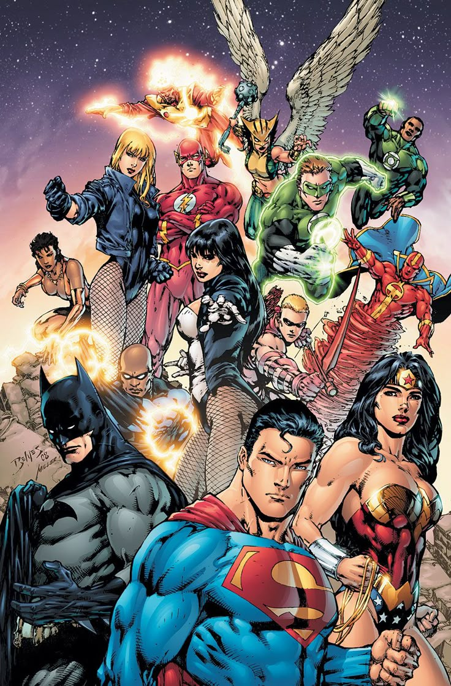

Harleen
Harley Quinn, identidade, obsessão e transformação.
hq / anime / filmes / código / ideias
Um lugar para guardar as coisas que chamaram minha atenção — e algumas coisas que eu mesmo tentei construir.

Não é uma lista completa. É uma seleção do que passou pelo meu radar e merece continuar aqui.

Uma coleção de séries, descobertas e fichas que continua crescendo.
ver registros →Harley Quinn, identidade, obsessão e transformação.
Batman e Superman em uma das leituras recentes.
Uma das histórias que mais chamou atenção nas férias.
Herói, memória, poder e a parte que ninguém controla.
A parte do arquivo em que a curiosidade deixa de ser só curiosidade e vira alguma coisa funcionando.
Um bot para WhatsApp baseado no GoatBot V2. Foi sendo modificado, quebrado, corrigido e aumentado ao longo do tempo.
ver no github ↗$ ls projetos/ luda-bot/ quiz-personagens/ luda-archive/ $ echo "continuando..." continuando...
Este site. Um projeto que mudou de forma várias vezes.
Imagens, respostas alternativas e experiências de quiz.
Porque eu gosto de guardar o que me interessa.
HQs que li. Anime que descobri. Filmes que ficaram na cabeça. Projetos que deram certo. Projetos que deram errado. Código que ainda não entendo completamente.
Não quero que isto pareça um currículo nem uma página tentando provar alguma coisa. É só um lugar que vai ficando mais interessante conforme eu faço mais coisas.